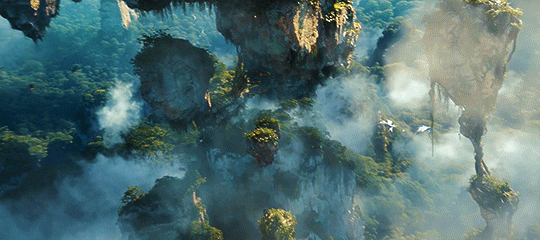

Ever since the world first discovered China through the writings of adventurer Marco Polo more than 700 years ago, this large Asian country has come to be regarded as the embodiment of all that is mysterious and exotic.
Thanks to its size, China as a tourist destination offers limitless scope for exploration. Whether you choose to travel aboard a luxury cruise ship through the picturesque Yangtze gorges, visit a bustling city, or seek out the tranquility of an ancient temple, this country is full of incredible experiences and sightseeing possibilities.
If you are a fan of the movie Avatar, you should definitely add Zhangjiajie National Forest Park to your bucket list!
Zhangjiajie National Forest is located in the Hunan province of China. It is known for its incredible natural beauty, unique geological formations, and breathtaking landscapes resembling the movie Avatar sets. The park covers an area of over 3,000 square kilometres and is home to over 3,000 unique rock formations, towering sandstone pillars, and deep ravines that have been carved out by millions of years of erosion. These formations are so unique that they have been designated a UNESCO World Heritage Site. The main attraction of the park is the towering sandstone pillars that rise up from the forest floor, often shrouded in mist and clouds. Locals call these pillars the "Hallelujah Mountains" due to their resemblance to the floating mountains in the movie Avatar.

✈ ✈Planning a vacation to China soon?✈✈
Contact
us for more information.
References
https://www.planetware.com/tourist-attractions/china-chn.htm
https://www.outlookindia.com/outlooktraveller/explore/story/73191/the-wonders-of-zhangjiajie-national-forest-park-in-china